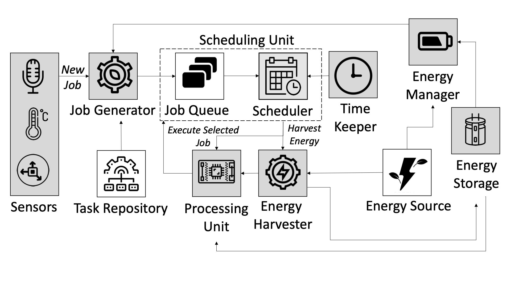
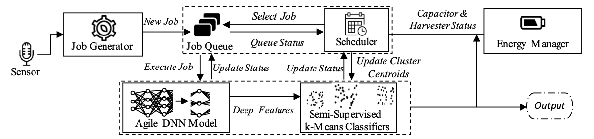
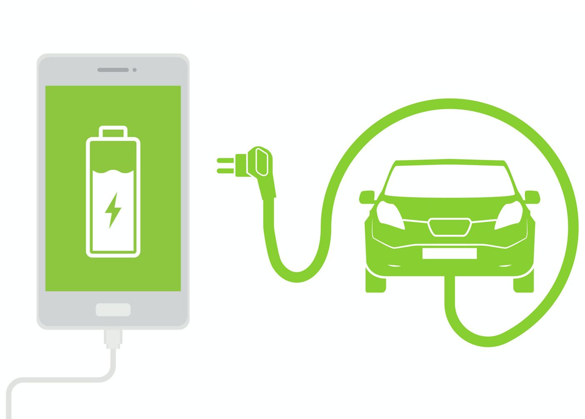
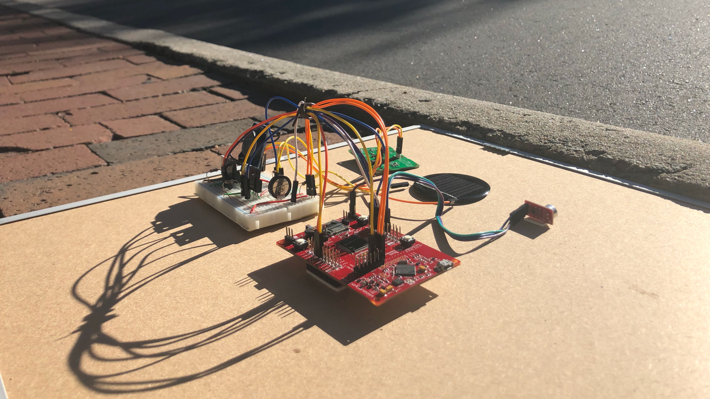
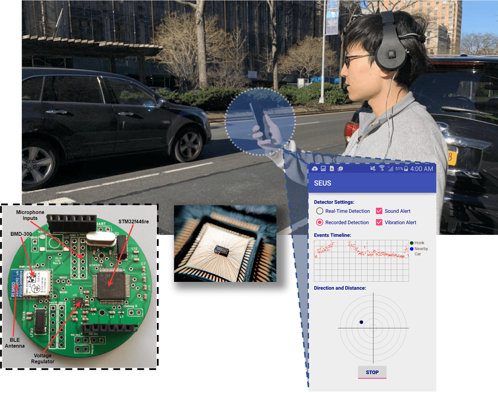
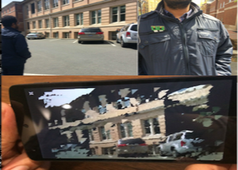
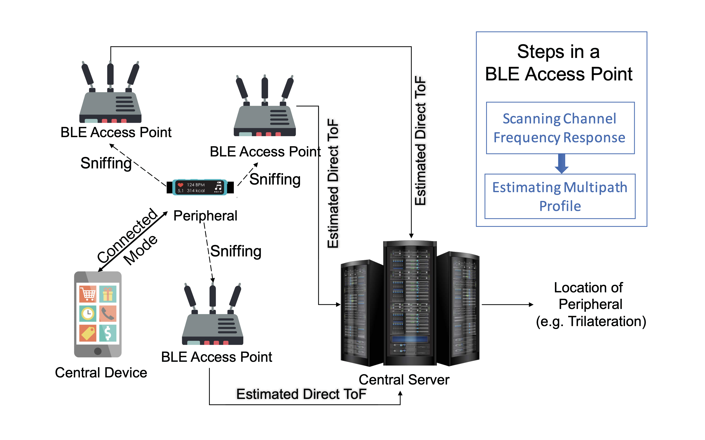
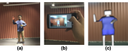
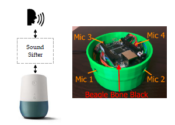
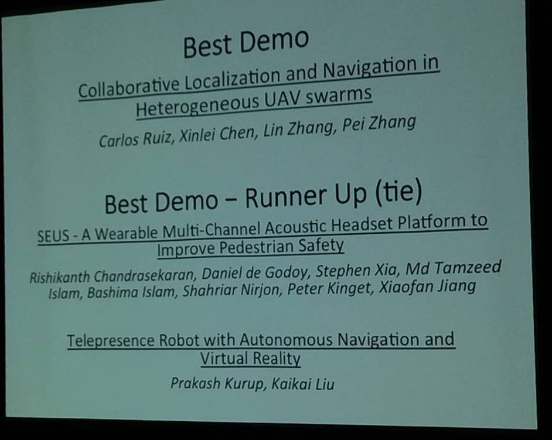

Breathing biomarkers, such as breathing rate, fractional inspiratory time, and inhalation-exhalation ratio, are vital for monitoring the user's health and well-being. Accurate estimation of such biomarkers requires breathing phase detection, i.e., inhalation and exhalation. However, traditional breathing phase monitoring relies on uncomfortable equipment, e.g., chestbands. Smartphone acoustic sensors have shown promising results for passive breathing monitoring during sleep or guided breathing. However, detecting breathing phases using acoustic data can be challenging for various reasons. One of the major obstacles is the complexity of annotating breathing sounds due to inaudible parts in regular breathing and background noises. This paper assesses the potential of using smartphone acoustic sensors for passive unguided breathing phase monitoring in a natural environment. We address the annotation challenges by developing a novel variant of the teacher-student training method for transferring knowledge from an inertial sensor to an acoustic sensor, eliminating the need for manual breathing sound annotation by fusing signal processing with deep learning techniques. We train and evaluate our model on the breathing data collected from 131 subjects, including healthy individuals and respiratory patients. Experimental results show that our model can detect breathing phases with 77.33% accuracy using acoustic sensors. We further present an example use-case of breathing phase-detection by first estimating the biomarkers from the estimated breathing phases and then using these biomarkers for pulmonary patient detection. Using the detected breathing phases, we can estimate fractional inspiratory time with 92.08% accuracy, the inhalation-exhalation ratio with 86.76% accuracy, and the breathing rate with 91.74% accuracy. Moreover, we can distinguish respiratory patients from healthy individuals with up to 76% accuracy. This paper is the first to show the feasibility of detecting regular breathing phases towards passively monitoring respiratory health and well-being using acoustic data captured by a smartphone.
Mobile Health
Breath Monitoring
Unannotated Data
Deep Neural Network

Batteryless systems go through sporadic power on and off phases due to intermittently available energy; thus, they are called intermittent systems. Unfortunately, this intermittence in power supply hinders the timely execution of tasks and limits such devices’ potential in certain application domains, e.g., healthcare, live-stock tracking. Unlike prior work on time-aware intermittent systems that focuses on timekeeping [1, 2, 3] and discarding expired data [4], this dissertation concentrates on finishing task execution on time. I leverage the data processing and control layer of batteryless systems by developing frameworks that (1) integrate energy harvesting and real-time systems, (2) rethink machine learning algorithms for an energy-aware imprecise task scheduling framework, (3) develop scheduling algorithms that, along with deciding what to compute, answers when to compute and when to harvest, and (4) utilize distributed systems that collaboratively emulate a persistently powered system. Scheduling Framework for Intermittently Powered Computing Systems. Batteryless systems rely on sporadically available harvestable energy. For example, kinetic-powered motion detector sensors on the impalas can only harvest energy when the impalas are moving, which cannot be ascertained in advance. This uncertainty poses a unique real-time scheduling problem where existing real-time algorithms fail due to the interruption in execution time. This dissertation proposes a unified scheduling framework that includes both harvesting and computing. Imprecise Deep Neural Network Inference in Deadline-Aware Intermittent Systems. This dissertation proposes Zygarde- an energy-aware and outcome-aware soft-real-time imprecise deep neural network (DNN) task scheduling framework for intermittent systems. Zygarde leverages the semantic diversity of input data and layer-dependent expressiveness of deep features and infers only the necessary DNN layers based on available time and energy. Zygarde proposes a novel technique to determine the imprecise boundary at the runtime by exploiting the clustering classifiers and specialized offline training of the DNNs to minimize the loss of accuracy due to partial execution. It also proposes a single metric, η to represent a system’s predictability that measures how close a harvesterâs harvesting pattern is to a constant energy source. Besides, Zygarde consists of a scheduling algorithm that takes available time, available energy, impreciseness, and the classifier's performance into account. Scheduling Mutually Exclusive Computing and Harvesting Tasks in Deadline-Aware Intermittent Systems. The lack of sufficient ambient energy to directly power the intermittent systems introduces mutually exclusive computing and charging cycles of intermittently powered systems. This introduces a challenging real-time scheduling problem where the existing real-time algorithms fail due to the lack of interruption in execution time. To address this, this dissertation proposes Celebi, which considers the dynamics of the available energy and schedules when to harvest and when to compute in batteryless systems. Using data-driven simulation and real-world experiments, this dissertation shows that Celebi significantly increases the number of tasks that complete execution before their deadline when power was only available intermittently. Persistent System Emulation with Distributed Intermittent System. Intermittently-powered sensing and computing systems go through sporadic power-on and off periods due to the uncertain availability of energy sources. Despite the recent efforts to advance time-sensitive intermittent systems, such systems fail to capture important target events when the energy is absent for a prolonged time. This event miss limits the potential usage of intermittent systems in fault- intolerant and safety-critical applications. To address this problem, this dissertation proposes Falinks, a framework that allows a swarm of distributed intermittently powered nodes to collaboratively imitate the sensing and computing capabilities of a persistently powered system. This framework provides power-on and off schedules for the swamp of intermittent nodes which has no communication capability with each other.
Intermittent System
Energy Harvesting
Real-Time Scheduling
Deep Neural Network

We propose Zygarde --- which is an energy- and accuracy-aware soft real-time task scheduling framework for batteryless systems that flexibly execute deep learning tasks1 that are suitable for running on microcontrollers. The sporadic nature of harvested energy, resource constraints of the embedded platform, and the computational demand of deep neural networks (DNNs) pose a unique and challenging real-time scheduling problem for which no solutions have been proposed in the literature. We empirically study the problem and model the energy harvesting pattern as well as the trade-off between the accuracy and execution of a DNN. We develop an imprecise computing-based scheduling algorithm that improves the timeliness of DNN tasks on intermittently powered systems. We evaluate Zygarde using four standard datasets as well as by deploying it in six real-life applications involving audio and camera sensor systems. Results show that Zygarde decreases the execution time by up to 26% and schedules 9% -- 34% more tasks with up to 21% higher inference accuracy, compared to traditional schedulers such as the earliest deadline first (EDF).
Intermittent System
Energy Harvesting
Real-Time Scheduling
Deep Neural Network
The sporadic nature of harvestable energy and the mutually exclusive computing and charging cycles of intermittently powered batteryless systems pose a unique and challenging real-time scheduling problem. Existing literature focus either on the time or the energy constraints but not both at the same time. In this paper, we propose two scheduling algorithms, named Celebi-Offline and Celebi-Online, for intermittent systems that schedule both computational and energy harvesting tasks by harvesting the required minimum amount of energy while maximizing the schedulability of computational jobs. To evaluate Celebi, we conduct simulation as well as trace-based and real-life experiments. Our results show that the proposed Celebi-Offline algorithm has 92% similar performance as an optimal scheduler, and Celebi-Online scheduler schedules 8% – 22% more jobs than the earliest deadline first (EDF), rate monotonic (RM), and as late as possible (ALAP) scheduling algorithms. We deployed solar-powered batteryless systems where four intermittent applications are executed in the TI-MSP430FR5994 microcontroller and demonstrate that the system with Celebi-Online misses 63% less deadline than a non-realtime system and 8% less deadline than the system with a baseline (as late as possible) scheduler.
Intermittent System
Energy Harvesting
Real-Time Scheduling
Deep Neural Network
This paper introduces intermittent learning — the goal of which is to enable energy harvested computing platforms capable of executing certain classes of machine learning tasks effectively and efficiently. We identify unique challenges to intermittent learning relating to the data and application semantics of machine learning tasks, and to address these challenges, we devise 1) an algorithm that determines a sequence of actions to achieve the desired learning objective under tight energy constraints, and 2) propose three heuristics that help an intermittent learner decide whether to learn or discard training examples at run-time which increases the energy efficiency of the system. We implement and evaluate three intermittent learning applications that learn the 1) air quality, 2) human presence, and 3) vibration using solar, RF, and kinetic energy harvesters, respectively. We demonstrate that the proposed framework improves the energy efficiency of a learner by up to 100% and cuts down the number of learning examples by up to 50% when compared to state-of-the-art intermittent computing systems that do not implement the proposed intermittent learning framework.
Machine Learning
Intermittent System
Energy Harvesting
Online Learning
Mobile respiratory assessments using commodity smartphones and smartwatches are unmet needs for patient monitoring at home. In this paper, we show the feasibility of using multimodal sensors embedded in consumer mobile devices for non-invasive, low-effort respiratory assessment. We have conducted studies with 228 chronic respiratory patients and healthy subjects, and show that our model can estimate respiratory rate with mean absolute error (MAE) 0.72+-0.62 breath per minute and differentiate respiratory patients from healthy subjects with 90% recall and 76% precision when the user breathes normally by holding the device on the chest or the abdomen for a minute. Holding the device on the chest or abdomen needs significantly lower effort compared to traditional spirometry which requires a specialized device and forceful vigorous breathing. This paper shows the feasibility of developing a low-effort respiratory assessment towards making it available anywhere, anytime through users' own mobile devices.
Digital Health
Breath Monitoring
Multi-Modal Systems
Tracking the type and frequency of cough events is critical for monitoring respiratory diseases. Coughs are one of the most common symptoms of respiratory and infectious diseases like COVID-19, and a cough monitoring system could have been vital in remote monitoring during a pandemic like COVID-19. While the existing solutions for cough monitoring use unimodal (e.g., audio) approaches for detecting coughs, a fusion of multimodal sensors (e.g., audio and accelerometer) from multiple devices (e.g., phone and watch) are likely to discover additional insights and can help to track the exacerbation of the respiratory conditions. However, such multimodal and multidevice fusion requires accurate time synchronization, which could be challenging for coughs as coughs are usually concise events (0.3-0.7 seconds). In this paper, we first demonstrate the time synchronization challenges of cough synchronization based on the cough data collected from two studies. Then we highlight the performance of a cross-correlation based time synchronization algorithm on the alignment of cough events. Our algorithm can synchronize 98.9% of cough events with an average synchronization error of 0.046s from two devices.
Digital Health
Breath Monitoring
Multi-Modal Systems
The recent development of extremely low-power computing devices and efficient energy harvesters led to the creation of computing systems that are powered by intermittently available harvested energy, e.g., solar, piezoelectric, and radio-frequency (RF). Such computing systems go through power-on and off phases due to the lack of adequate harvesting energy. These systems are known as Intermittent Computing Systems. While existing works on intermittent computing systems concentrate preliminary on the lower level goals, e.g., execution progress and memory consistency, the potential of such systems under timing constraints is yet to be explored. Some applications of intermittent systems with timing constraints include monitoring wildlife, health, infrastructure and environmental conditions, pedestrian safety, indoor localization and occupancy detection. In this work, we schedule tasks on intermittent systems where tasks may have timing constraints. We focus on the timely-response of intermittent systems by (1) developing unified frameworks that integrate harvesting and real-time systems, and (2) engineering machine learning algorithms for timely execution of the important portion of a task via imprecise scheduling.
Intermittent System
Energy Harvesting
Real-Time Scheduling
Deep Neural Network

Battery aging is increasingly becoming a major concern in mobile devices such as laptops or smartphones and often results in premature device replacement. While previous studies have shown that improved charging strategies can increase cycle life, most common chargers do not sufficiently consider battery health. In this perspective paper, we give an overview of recent advances made in battery-health-aware charging and highlight the benefits of making chargers more intelligent to improve the cycle life of different battery-powered devices. In particular, we quantify the potential benefits that intelligent chargers will have and outline possible research directions to make them such.
Battery Life
Charging Habit

Solar and radio frequency harvesters serve as a viable alternative energy source to batteries in many cases where the battery cannot be easily replaced. However, energy harvesters do not consistently produce enough energy to sustain an energy consumer; thus, both the energy availability and execution of the energy-consuming process are intermittent. By simulating intermittent systems with large-scale energy demands using specifically-designed circuit models, the harvested voltage and other parameters such as the voltages across the capacitor and the load were determined. We plotted these data, for both harvested solar and harvested radio frequency energy, to make probability plots depicting the likelihood that energy will be available now given that N number of energy events have occurred. Additionally, we designated a metric as the η-factor, which was calculated from these probability plots for the solar and radio frequency data to quantify the reliability of the power source. The η-factor for harvested solar energy was statistically significantly higher than the η-factor for harvested radio frequency energy, meaning harvested solar energy was more consistently available than harvested radio frequency energy. Finally, we collected data to determine the effects on the output voltage of various obstacles between the radio frequency transmitter and receiver. We found that obstacles like metal and people caused a more pronounced drop in the amount of energy harvested when compared to other obstacles like foam or wood. Quantifying the reliability of different harvested sources would help in identifying the most practical and efficient forms of renewable energy; determining which obstacles cause the most obstruction to a signal can aid in the strategic placement of harvesters for maximum energy efficiency.
Intermittent Systems
Energy Harvesting

With the prevalence of smartphones, pedestrians and joggers today often walk or run while listening to music. Since they are deprived of their auditory senses that would have provided important cues to dangers, they are at a much greater risk of being hit by cars or other vehicles. In this article, we present PAWS, a smartphone platform that utilizes an embedded wearable headset system mounted with an array of MEMS microphones to help detect, localize, and warn pedestrians of the imminent dangers of approaching cars.
Smartphones
Headphone
Safety Estimation
Microphone Array
In this paper, we propose real-time scheduling algorithms for batteryless sensing and event detection systems which execute real-time deep learning tasks and are powered solely by harvested energy. The sporadic nature of harvested energy, resource constraints of the embedded platform, and the computational demand of deep neural networks pose a unique and challenging real-time scheduling problem for which no solutions have been proposed in the literature. We empirically study the problem and model the energy harvesting pattern as well as the trade-off between the accuracy and execution of a deep neural network. We develop an imprecise computing-based real-time scheduling algorithm that improves the schedulability of deep learning tasks on intermittently powered systems.
Intermittent System
Real-Time Systems
Deep Learning
In this paper, we analyze the feasibility of using LoRa, an emerging low-power wide-area networking technology, in indoor localization. We define seven criteria upon which a wireless technology's prospect as an indoor localization system depends largely. For comparison, we take two other popular wireless technologies (BLE and WiFi) that have been previously proposed in many modern indoor localization systems. We deploy these three technologies in multiple line-of-sight and non-line-of-sight indoor scenarios including corridors, open spaces, spaces with a varying number of walls, and across floors of multi-storied buildings. Considering the coverage, stability and regularity of signals, accuracy of localization, responsiveness, power, and cost-we conclude that LoRa is a feasible choice for indoor localization solution, especially in wide and tall indoor environments like warehouses and multi-storied buildings.
LORAWAN
Indoor Localization
In this paper, we argue that the fusion of machine learning (ML) and batteryless computing systems enables true lifelong learning in mobile devices. The lack of learning from experience in current batteryless systems makes them ignorant of changes in their operating environment. Due to high communication cost, latency, privacy, and dependency issues of offloading computation to an edge device, on-device training is a solution for batteryless systems to learn and adapt in dynamically changing environments. Combining batteryless systems and ML is however a challenging task. Sporadic energy supply and limited resources in a batteryless system cause execution-discontinuity and data-constraints in ML processes. To understand these challenges, we identify suitable ML tasks for such systems and study the energy producers, i.e., harvesters, and consumers, i.e., intermittently executable tasks in a ML pipeline. Using a trace-driven simulation, we demonstrate the feasibility of on-device training of a batteryless learner.
Intermittent System
Machine Learning
Batteryless System

The Glimpse.3D is a body-worn camera that captures, processes,stores, and transmits 3D visual information of a real-world environment using a low cost camera-based sensor system that isconstrained by its limited processing capability, storage, and battery life. The 3D content is viewed on a mobile device such as a smartphone or a virtual reality headset. This system can be used in applications such as capturing and sharing 3D content in the social media, training people in different professions, and post-facto analysis of an event. Glimpse.3D uses off-the-shelf hardware and standard computer vision algorithms. Its novelty lies in the ability to optimally control camera data acquisition and processing stages to guarantee the desired quality of captured information and battery life.The design of the controller is based on extensive measurementsand modeling of the relationships between the linear and angular motion of a body-worn camera and the quality of generated 3D point clouds as well as the battery life of the system. To achieve this, we 1) devise a new metric to quantify the quality of generated 3D point clouds, 2) formulate an optimization problem to find an optimal trigger point for the camera system that prolongs its battery life while maximizing the quality of captured 3D environment,and 3) make the model adaptive so that the system evolves and its performance improves over time.
Multimodal Sensor
3D Reconstruction
Body-Camera

Mobility tracking of IoT devices in smart city infrastructures such as smart buildings, hospitals, shopping centers, warehouses, smart streets, and outdoor spaces has many applications. Since Bluetooth Low Energy (BLE) is available in almost every IoT device in the market nowadays, a key to localizing and tracking IoT devices is to develop an accurate ranging technique for BLE-enabled IoT devices. This is, however, a challenging feat as billions of these devices are already in use, and for pragmatic reasons, we cannot propose to modify the IoT device (a BLE peripheral) itself. Furthermore, unlike WiFi ranging -- where the channel state information (CSI) is readily available and the bandwidth can be increased by stitching 2.4GHz and 5GHz bands together to achieve a high-precision ranging, an unmodified BLE peripheral provides us with only the RSSI information over a very limited bandwidth. Accurately ranging a BLE device is therefore far more challenging than other wireless standards. In this paper, we exploit characteristics of BLE protocol (e.g. frequency hopping and empty control packet transmissions) and propose a technique to directly estimate the range of a BLE peripheral from a BLE access point by multipath profiling. We discuss the theoretical foundation and conduct experiments to show that the technique achieves a 2.44m absolute range estimation error on average.
Bluetooth Low Energy
Internet of Things
Ranging
With the prevalence of smartphones, pedestrians and joggers today often walk or run while listening to music. Since they are deprived of their auditory senses that would have provided important cues to dangers, they are at a much greater risk of being hit by cars or other vehicles. In this demonstration we present SEUS, a wearable system aimed at Sense Enhancement for Urban Safety. SEUS uses a three-stage architecture, consisting of headset mounted audio sensors, an embedded front-end for signal processing and feature extraction, and machine learning based classification on a smartphone, to provide early danger detection for pedestrians in real-time.
Acoustic Sensing
Vehicle Detection
Vehicle Localization
Pedestrian Safety

This paper describes MARBLE, which is a mobileaugmented reality system that uses a cluster of off-the-shelf,low power, storage and bandwidth constrained Bluetooth LowEnergy (BLE) beacons as an infrastructure. MARBLE efficiently stores and broadcasts minimal visual information of 3D objects and help localize a mobile viewer, who receives, renders,and experiences those 3D virtual objects while walking in theenvironment, wearing an augmented reality headset or viewing it through a smartphone. Compared to other common indoorAR systems, MARBLE consumes less computation resource,stores and broadcasts 3D objects and shapes data over a verylong period, does not require a pre-defined texture pattern tobe placed in the scene for camera pose estimation, and is lesssensitive to camera capture quality. We conduct a user study to demonstrate that MARBLE is capable of capturing freehandgestures, and when replayed back, a user sees a virtual avatarperforming the gestures in the 3D environment in real-time.
Bluetooth Low Energy
Augmented Reality
Low Power Wide Area Networks (LPWANs) are an excellent fit to city-scale IoT applications becuase of their long range and a battery life of several years, and a data rate of 25-50kbps, which is sufficient to carry IoT traffic. However, a practical limitation of a LPWAN-based real-time wireless network is the duty-cycle limit imposed on the sub-1GHz band by the FCC. In this paper, we overcome this challenge by proposing the first duty-cycle-aware wireless link scheduling algorithm for real-time LPWANs that considers the urgency of the packets as well as the availability of the wireless channels. The proposed algorithm is implemented in a five-node, wide-area outdoor test-bed in multiple realworld scenarios. Simulation results are provided to quantify its performance under different settings (e.g. larger networks, variety of workloads, and multiple baselines). In both realworld deployments and simulations, the proposed algorithm outperforms standard scheduling algorithms in terms of link schedulability, deadline misses, and buffer size.
Real-Time Scheduling
LPWAN
LORAWAN
This demo is an implementation of our motion-triggered camera system that captures, processes, stores, and transmits 3D visual information of a real-world environment using a low-cost camera-based sensor system that is constrained by its limited processing capability, storage, and battery life. This system can be used in applications such as capturing and sharing 3D content in the social media, training people in different professions, and post-facto analysis of an event. This system uses off-the-shelf hardware and standard computer vision algorithms. Its novelty lies in the ability to optimally control camera data acquisition and processing stages to guarantee the desired quality of captured information and battery life. The design of the controller is based on extensive measurements and modeling of the relationships between the linear and angular motion of a camera and the quality of generated 3D point clouds as well as the battery life of the system. To achieve this, we 1) devise a new metric to quantify the quality of generated 3D point clouds, 2) formulate an optimization problem to find an optimal trigger point for the camera system and prolongs its battery life while maximizing the quality of captured 3D environment, and 3) make the model adaptive so that the system evolves and its performance improves over time.
Multimodal Sensor
3D Reconstruction
Body-Camera
With the prevalence of smartphones, pedestrians and joggers today often walk or run while listening to music. Since they are deprived of their auditory senses that would have provided important cues to dangers, they are at a much greater risk of being hit by cars or other vehicles. In this article, we present PAWS, a smartphone platform that utilizes an embedded wearable headset system mounted with an array of MEMS microphones to help detect, localize, and warn pedestrians of the imminent dangers of approaching cars.
Acoustic Sensing
Vehicle Detection
Vehicle Localization
Pedestrian Safety

In this paper, we study the overhearing problem of continuous acoustic sensing devices such as Amazon Echo, Google Home, or such voice-enabled home hubs, and develop a system called SoundSifter that mitigates personal or contextual information leakage due to the presence of unwanted sound sources in the acoustic environment. Instead of proposing modifications to existing home hubs, we build an independent embedded system that connects to a home hub via its audio input. Considering the aesthetics of home hubs, we envision SoundSifter as a smart sleeve or a cover for these devices. SoundSifter has necessary hardware and software to capture the audio, isolate signals from distinct sound sources, filter out signals that are from unwanted sources, and process the signals to enforce policies such as personalization before the signals enter into an untrusted system like Amazon Echo or Google Home. We conduct empirical and real-world experiments to demonstrate that SoundSifter runs in real-time, is noise resilient, and supports selective and personalized voice commands that commercial voice-enable home hubs do not.
Privacy
Continuous Listening
Voice Assistant
Internet of Things
In this paper, we propose a predictive maintenance scheme for centralized HVAC systems by autonomous monitoring and analyzing their acoustic emissions. Our proposed solution allows a building to be retrofitted to monitor its HVAC without having to modify the existing infrastructure. Our approach is to employ an energy-efficient, low-cost, and distributed acoustic sensing platform to capture and process audio signals from HVAC systems. As part of this project, we develop audio models of a running HVAC system using a combination of unsupervised and supervised machine learning techniques with a human-in-the-loop for fault identification and prediction.
HVAC Monitoring
Acoustic Sensing
Usage of firearm by only original users is one of the prime concerns of the research community considering limitless damage and even lethal consequences in case of having the usage in any other way. However, a low-cost, limited-resources, and high-accuracy solution for performing real-time user identification of firearm is yet to be proposed in the literature. As a remedy to this situation, in this paper, we propose a novel solution named Trusted Worrier that can identify users of a firearm in real time using only a small number of low-cost and low-power COTS pressure sensors. Here, we propose judicious positioning of the sensors such that the number of required sensors can retain a small value (five in our case). Besides, we develop a novel machine learning technique that exhibits high accuracy in user authentication demanding small amount of resource and execution time. We evaluate the approach using real data collected from twenty nine users. Our rigorous analysis over the data confirms effectiveness of Trusted Worrier in identifying users of a firearm.
Biometric
Firearm Safety
Approximate computing has the potential to provide approximate results with user defined error bound faster than conventional computing. Relaxed synchronization is one of the many ways to achieve approximate computation. Researchers in this area primarily focus on programming languages like C/C++, but languages like Java are still largely overlooked. In Java, generally full synchronization can be achieved by using synchronized keyword for method and block level or by using various locks of Java concurrency utilities framework. We provide a detailed performance evaluation of these different mechanisms to achieve full synchronization in Java. We introduce an adaptive locking mechanism using existing locks of Java concurrency utilities framework to provide relaxed synchronization for Java to be used for approximate computing. Our novel relaxed synchronization based framework achieved one of the important outcomes of approximate computing, better performance.
Approximate Computing
Linked List
JAVA
Locking Protocol

With the prevalence of smartphones, pedestrians and joggers today often walk or run while listening to music. Since they are deprived of their auditory senses that would have provided important cues to dangers, they are at a much greater risk of being hit by cars or other vehicles. In this demonstration we present SEUS, a wearable system aimed at Sense Enhancement for Urban Safety. SEUS uses a three-stage architecture, consisting of headset mounted audio sensors, an embedded front-end for signal processing and feature extraction, and machine learning based classification on a smartphone, to provide early danger detection for pedestrians in real-time.
Acoustic Sensing
Vehicle Detection
Vehicle Localization
Pedestrian Safety
In this paper, we introduce the concept of influential communities in a co-author network. We term a community as the most influential if the community has the highest influence among all other communities in the entire network. Influence of a community depends on the impact of the contents (e.g., citations of papers) generated by the members of that community. We propose an algorithm to identify the top K influential communities of an online social network. As a working prototype, we develop a visualization system that allows a user to find the top K influential communities from a co-author network. A user can search top K influential communities of particular research fields and our system provides him/her with a visualization of these communities. A user can explore the details of a community, such as authors, citations, and collaborations with other communities.
Social Network Analysis
Community Detection
Influential Community
Visualizing Community
The emerging usage of information and communication tech- nology (ICT) can play a vital role to aid combating harass- ment and violence against women. A few Smartphone ap- plications (apps) have been developed in this regard which often may not be helpful in crucial moments. Hence, we propose here a complete system (Super-savior system) com- bining a Smartphone application (Super-savior app) with a paired hand-wearable device (Super-watch) that will send emergency messages to three nearest police stations and pre- set contact numbers mentioning user’s current location. We also discussed an advanced version of this system for prac- tical application.
Wearable
Violance Against Women
Mobile Health Monitoring
Emergency Responder